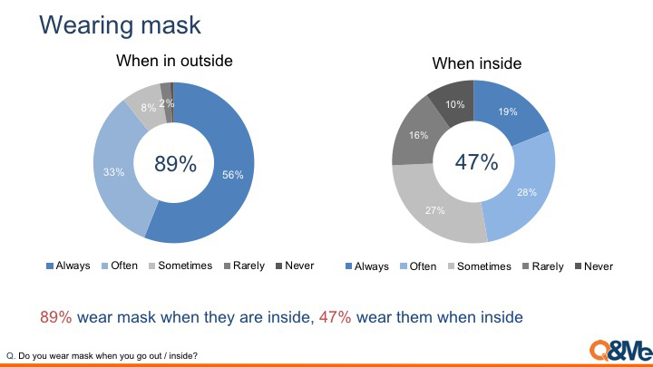
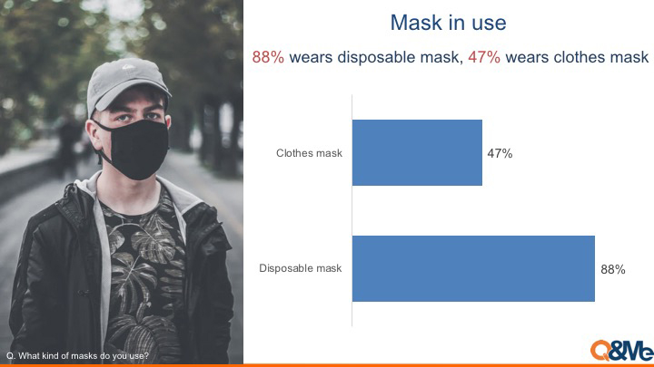
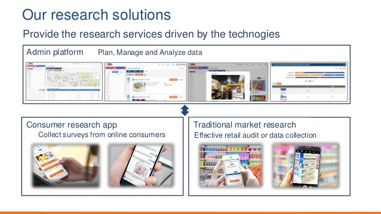

Ảnh hưởng của virus Corona đối với đời sống người Việt Nam
Những tin tức về virus Corona đã dần thay đổi hành vi của người Việt Nam nói chung. Khảo sát giúp làm rõ những tác
động đối với ý thức bảo vệ sức khỏe cũng như những thay đổi trong cuộc sống hàng ngày của họ.


89% đeo khẩu trang ở những nơi ngoài trời, 47% dùng ở những nơi trong nhà
88% sử dụng khẩu trang y tế, 47% dùng khẩu trang vải
78% giảm tần suất ra ngoài do ảnh hưởng của virus
Hơn 80% giảm các hoạt động giải trí, gặp gỡ bạn bè, ăn uống
Tần suất sử dụng các phương tiện truyền thông như internet, TV tăng. Việc sử dụng dịch vụ giao thức ăn tại nhà cũng tăng
Người dân hạn chế ra ngoài hơn. 78% giảm tần suất ra ngoài ở nhiều mức độ khác nhau, trong đó 47% giảm một cách rõ
rệt. Hơn 80% giảm tần suất cho các hoạt động giải trí, gặp gỡ bạn bè và ăn uống bên ngoài. Một nửa trong số họ giảm
tần suất mua sắm bên ngoài đối với các mặt hàng không thiết yếu như thời trang, mỹ phẩm và công nghệ thông tin.
Mặt khác, thời gian sử dụng các phương tiện truyền thông như internet, tivi dần tăng. 49% dành nhiều thời gian hơn
cho internet và 45% xem TV nhiều hơn so với trước đây. Các tin tức về virus Corona cũng ảnh hưởng đến thói quen mua
sắm trực tuyến. Đặc biệt, dịch vụ giao thức ăn tại nhà được sử dụng nhiều hơn với 28% người cho biết họ dùng dịch vụ
này thường xuyên hơn so với trước đây.
Những tin tức này cũng tác động đến niềm tin và thói quen tiêu dùng, đặc biệt là đối với các ngành dịch vụ. Người
dân dành ít thời gian ra ngoài hơn và thay thế bằng các hoạt động trực tuyến. Điều này khiến họ có thể ở nhà mà vẫn
đáp ứng được các nhu cầu hàng ngày của mình.

Ngày nay thời đại 4.0 đã mở ra nhiều phương tiện kinh tế ngay cả trong dịch bệch giúp người dân có thể kiếm tiền với
một chiếc smartphone. Bạn cũng có thể thấy rằng mua bán trực tuyến giờ đây cũng tiện lời và nhanh chóng hơn rất
nhiều so với mua sắm truyền thống.
Theo nghiên cứu, các dịch vụ trực tuyến đều được ưu tiên hàng đầu khi chỉ cần vài cái click chuột bạn đã đăng kí,
quản lí... thậm chí cả marketing . Việc phỏng vấn hay họp nhóm giờ đây cũng không cần phải face-face nữa mà đã có
thể giao tiếp trực tiếp với nhau qua các ứng dụng như hangouts meet,zalo,Messenger ...
Bên cạnh đó, ngành âm nhạc việt nam đã sáng tác ra một sản phẩm có giai điệu thích thú, phù hợp với nội dung tuyên truyền phòng trống dịch nCoV